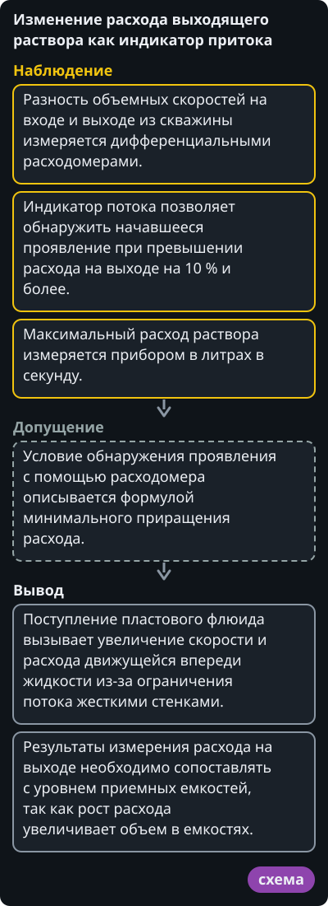
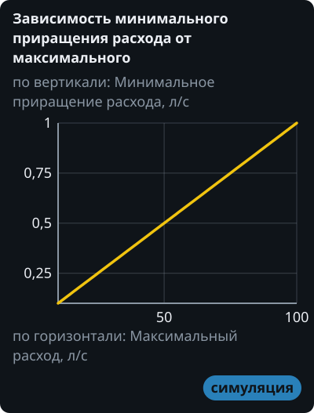

Шаг 6 из 13 · ≈ 4 мин · стр. 234–235
Изменение расхода выходящего раствора как индикатор притока
Контроль расхода раствора на выходе
Опирается на Контроль уровня раствора в емкостях для поиска притока По каким внешним признакам можно заметить приток флюида
Прогресс шага: 0 из 2
из книги (слова автора) пересказ ИИ гипотеза
Пересказ проверен по странице книги — нажмите «стр. N».
Сначала угадай
«Эффективность обнаружения газопроявлений расходомером существенно зависит от подачи насосов.» пересказ
Как думаешь: это верно?
СовпалоНе совпало: на самом деле это верно.на самом деле это неверно.
С увеличением подачи время обнаружения проявления при одном и том же притоке газа в скважину сокращается.
Понять
Суть
Приток флюида ускоряет поток бурового раствора, что фиксируется расходомерами и индикаторами потока на выходе из скважины. пересказ
Зачем этот шаг
Дополняет контроль уровня измерением расхода потока на выходе из скважины. пересказ
Как это работает
Ограничение потока жесткими стенками скважины приводит к тому, что поступающий пластовый флюид увеличивает скорость и расход движущейся впереди жидкости. пересказ
Поступление пластового флюида вызывает увеличение скорости и расхода движущейся впереди жидкости из-за ограничения потока жесткими стенками. вывод
поступление пластового флюида вызывает увеличение скорости, а следовательно, и расхода движущейся впереди жидкостиАвтор, стр. 234
Разность объемных скоростей на входе и выходе из скважины измеряется дифференциальными расходомерами.
Разность объемных скоростей на входе и выходе из скважины измеряется дифференциальными расходомерамиАвтор, стр. 234
Индикатор потока позволяет обнаружить начавшееся проявление при превышении расхода на выходе на 10 % и более.
контролируют с помощью индикатора потока, позволяющего обнаружить начавшееся проявление при превышении расхода на выходе на 10 % и болееАвтор, стр. 234
Результаты измерения расхода на выходе необходимо сопоставлять с уровнем приемных емкостей, так как рост расхода увеличивает объем в емкостях. вывод
Результаты измерения расхода потока на выходе необходимо сопоставить с данными измерений уровня приемных емкостей, поскольку повышение расхода раствора приводит к увеличению уровня в емкостяхАвтор, стр. 234
Максимальный расход раствора измеряется прибором в литрах в секунду.
Q_{\max}$ — максимальный расход раствора, измеряемый прибором, л/сАвтор, стр. 235
Эффективность обнаружения газопроявлений расходомером существенно зависит от подачи насосов. вывод
Эффективность обнаружения газопроявлений расходомером существенно зависит от подачи насосовАвтор, стр. 235
С увеличением подачи насосов время обнаружения проявления при одном и том же притоке газа сокращается в соответствии с заданным равенством. вывод
С увеличением подачи время обнаружения проявления при одном и том же притоке газа в скважину сокращается в соответствии с равенствомАвтор, стр. 235
Формулы
\Delta Q_{\min} = \delta Q_{\max} / 100,Условие обнаружения проявления с помощью расходомера описывается формулой минимального приращения расхода.
\Delta Q_2 = n \Delta Q_1,Приращение расхода при второй подаче насоса связано с первой подачей коэффициентом превышения n.
Иллюстрации


Интерактив симуляция
Зависимость минимального приращения расхода от максимального расхода
При увеличении максимального расхода прибора растет минимальное приращение расхода, необходимое для обнаружения проявления. пересказ
Значения рассчитаны кодом по формуле главы, а не измерены.
Показать Скрыть — таблица значений
| Максимальный расход раствора, л/с | Минимальное приращение расхода, л/с |
|---|---|
| 10 | 0,1 |
| 21,25 | 0,2125 |
| 32,5 | 0,325 |
| 43,75 | 0,4375 |
| 55 | 0,55 |
| 66,25 | 0,6625 |
| 77,5 | 0,775 |
| 88,75 | 0,8875 |
| 100 | 1 |
В данных
Что это значит для данных
В данных временных рядов расходомера фиксируется разность объемных скоростей и относительное приращение расхода на выходе, которое сопоставляется с уровнем в емкостях. пересказ
Где ломается: Сигнал расходомера может давать ложные срабатывания при колебаниях подачи насосов или нестабильной работе поверхностного оборудования. пересказ
Модель аномалий может автоматически детектировать начало притока по превышению порога в 10% разницы расхода. гипотеза
Аналогия
Детекция аномалий сетевого трафика по превышению пропускной способности канала. пересказ
Где перестаёт работать: В отличие от ИТ-сети, в скважине задержка сигнала и реакция системы зависят от гидравлики и текущей подачи буровых насосов.
Как делает специалист
На практике разность скоростей измеряют дифференциальными расходомерами или индикатором потока, сопоставляя их с уровнем в приемных емкостях. пересказ
Частая ошибка
Превышение расхода на выходе над входом не зависит от текущей подачи насосов, хотя на практике эффективность обнаружения и время реакции напрямую зависят от производительности насосов. пересказ
Проверить себя
Задания
Задание 1 узнавание
Разность объемных скоростей на входе и выходе из скважины измеряется специальными приборами, а обнаружение начавшегося проявления контролируют с помощью , который фиксирует превышение расхода на выходе на и более.
Правильный ответ: индикатора потока, 10 %
Для контроля начавшегося проявления используется индикатор потока, фиксирующий превышение расхода на 10% и более.
Задание 2 понимание
Расположите этапы контроля и развития ситуации при притоке пластового флюида в правильной последовательности:
- Поступление пластового флюида ускоряет поток бурового раствора из-за ограничения стенок скважины.
- Эффективность обнаружения проявления оценивается с учетом текущей подачи насосов.
- Изменение расхода фиксируется расходомерами и сопоставляется с уровнем в приемных емкостях.
Правильный ответ: Поступление пластового флюида ускоряет поток бурового раствора из-за ограничения стенок скважины. → Изменение расхода фиксируется расходомерами и сопоставляется с уровнем в приемных емкостях. → Эффективность обнаружения проявления оценивается с учетом текущей подачи насосов.
Сначала флюид ускоряет поток, затем расход фиксируется приборами и сопоставляется с емкостями, а эффективность оценивается по подаче насосов.
Чек-лист шага
Глубже
Нюансы
Показать Скрыть — нюансы
Обнаружение проявления индикатором потока происходит при превышении расхода на выходе на 10% и более, а эффективность метода зависит от подачи насосов. пересказ
Новые понятия
Показать Скрыть — новые понятия
- дифференциальный расходомер
- индикатор потока
Используются: газонефтеводопроявления, буровой раствор, приемные емкости
Источник
Показать Скрыть — источник
Каждое утверждение шага — со страницей PDF и дословной цитатой. Нажми «стр. N», чтобы сверить по книге.
- Поступление пластового флюида вызывает увеличение скорости и расхода движущейся впереди жидкости из-за ограничения потока жесткими стенками.
- Разность объемных скоростей на входе и выходе из скважины измеряется дифференциальными расходомерами.
- Индикатор потока позволяет обнаружить начавшееся проявление при превышении расхода на выходе на 10 % и более.
- Результаты измерения расхода на выходе необходимо сопоставлять с уровнем приемных емкостей, так как рост расхода увеличивает объем в емкостях.
- Условие обнаружения проявления с помощью расходомера описывается формулой минимального приращения расхода.
- Максимальный расход раствора измеряется прибором в литрах в секунду.
- Эффективность обнаружения газопроявлений расходомером существенно зависит от подачи насосов.
- С увеличением подачи насосов время обнаружения проявления при одном и том же притоке газа сокращается в соответствии с заданным равенством.
- Приращение расхода при второй подаче насоса связано с первой подачей коэффициентом превышения n.